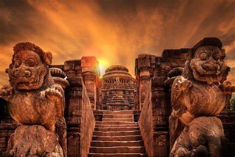
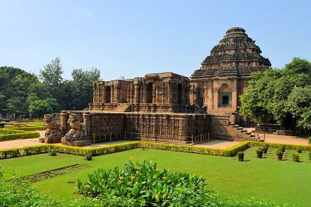

A magnificent 13th-century temple dedicated to the Sun God in Konark, Odisha
The Konark Sun Temple, located in Konark, Odisha, India, is a 13th-century temple dedicated to the Sun God, Surya. Built by King Narasimhadeva I of the Eastern Ganga dynasty, this UNESCO World Heritage site is renowned for its stunning architecture and intricate carvings. The temple is designed in the shape of a gigantic chariot with twelve pairs of elaborately carved stone wheels, pulled by a set of seven horses.
The Konark Sun Temple is an architectural marvel, showcasing the brilliance of Kalinga architecture. The temple complex includes the main sanctum, which once had a towering structure, the audience hall (Jagamohana), the dance hall (Nata Mandir), and the dining hall (Bhoga Mandapa). The walls of the temple are adorned with sculptures of deities, musicians, dancers, and various scenes from daily life, reflecting the artistic excellence of the time.
The temple is not only a place of worship but also a symbol of India's rich cultural heritage. It stands as a testimony to the advanced architectural and engineering skills of ancient India. The temple's intricate carvings and the sheer scale of the structure reflect the grandeur and devotion of the rulers of the Eastern Ganga dynasty.
The Konark Sun Temple holds immense religious significance as a revered site dedicated to Surya, the Sun God. It is believed that the temple was constructed to honor the Sun God and to mark the victory of King Narasimhadeva I. The temple attracts pilgrims and tourists alike, who come to pay homage to the Sun God and marvel at the architectural splendor.
The temple is a hub of art and culture, with its walls adorned with exquisite sculptures and carvings that depict various aspects of life, mythology, and spirituality. The annual Konark Dance Festival, held in the backdrop of the temple, celebrates classical Indian dance forms, attracting performers and art enthusiasts from all over the world.